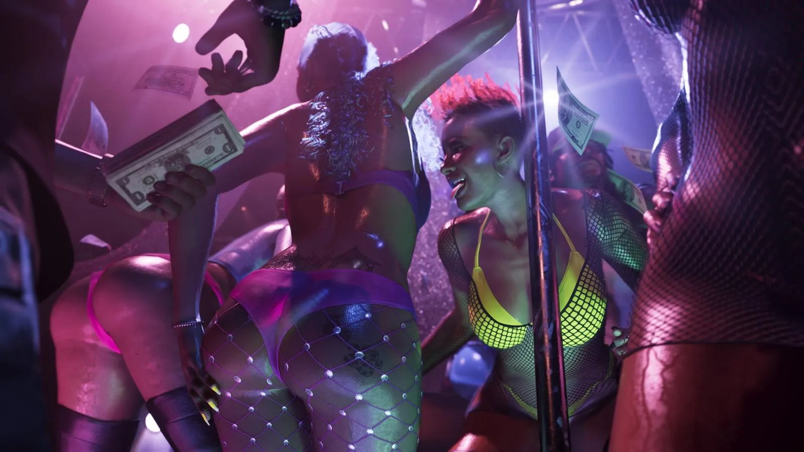

Все машины GTA 6: 557 единиц транспорта, категории, стили и где взять
Опубликовано:

- В игре 557 единиц транспорта: 277 базовых моделей и 280 особых машин в 25 стилях.
- Для 100% нужно отсканировать WAiNK 200 базовых моделей; особые не нужны.
- Угнанную машину можно сделать личной со второй главы.
- Список Рэнди — 16–18 дорогих машин по $30 000–35 000 за целую.
- Ремонт — на заправках (57), тюнинг — в мод-шопах (14), перекраска — в Pay ’n’ Spray (19).
Категории
Меню «Прогресс» делит весь транспорт на пять групп. Цифры — по базе игры:
| Тип | Сколько | Из чего состоит |
|---|---|---|
| Легковые | 157 | купе 18, маслкары 26, внедорожники 8, пикапы 17, седаны 29, спорткары 13, суперкары 9, SUV 23, фургоны 14 |
| Мотоциклы | 29 | спортбайки, кроссовые, чопперы |
| Водный транспорт | 28 | катера, яхты, понтоны, гидроциклы, аэроглиссеры, каяки |
| Авиация | 16 | самолёты, гидропланы, вертолёты |
| Служебные | 47 | грузовики 11, коммунальные 9, экстренные службы 7, военные 8, промышленные 6, транспортные 6 |
25 стилей особых машин
280 особых машин стоят в определённых местах и выглядят по-своему. Это почти энциклопедия автокультуры Флориды:
| Стиль | Машин | Стиль | Машин |
|---|---|---|---|
| Leonida Man | 30 | Retro | 20 |
| Ultra-Luxe | 19 | Fine Art | 17 |
| All-Terrain | 17 | Street Racer | 16 |
| Girlypop | 16 | Blinged Up | 15 |
| Ripped & Shredded | 13 | Patriot | 12 |
| Race Bikes | 11 | Hot Rods | 10 |
| Swamp Style | 10 | Driveshaft Famous | 8 |
| Clout Chaser | 8 | Stock Car | 7 |
| Chopper | 7 | Demolition Derby | 6 |
| Mudder | 6 | Topper | 6 |
| Pedal Power | 6 | Donks | 5 |
| Lowriders | 5 | Law & Order | 5 |
| Throwback | 5 |
Все 16 машин Girlypop открывают после финала чит-фильтр Neon Jungle. Пять машин Уаймана (Wyman’s Cars) — только в Ultimate Edition.
Модели, которые уже знают все
| Модель | Где встречается |
|---|---|
| Pfister Comet S2 | на выбор в Company Cars — самая быстрая из предложенных |
| Schafter V12 | угон для Рауля в Car Service |
| Zorrusso | угон для Рэнди — с неё начинается список заказов |
| Ganado | машина Джейсона в главе 1 |
| ’32 Hustler | награда в Dubious Provenance |
| Seashark (гидроцикл) | погоня в Boobie Time |
| Coochie Camper | погоня в Amateur Hour |
| Übermacht Sentinel | красный кабриолет из «Расширенного показа» |
| Vapid Caracara | пикап Брайана |
| Maibatsu Boomazoom, MTL Pumper, HVY Bulldozer, Western Zombie Bobber | появляются через читы после финала |
Реальные копии игровых машин — Grotti Cheetah, Pegassi Tempesta, Progen Emerus, Invetero Coquette, Albany Buccaneer и Albany Manana — West Coast Customs собрали ещё до релиза (подробно — Настоящие машины GTA 6: Grotti Cheetah за £1 млн и ещё пять от West Coast Customs).
Список Рэнди (Wish List)
Открывается в середине главы 3 миссией Steal the Zorruso for Randy: она даёт клонер ключей. Дальше Рэнди ждёт дорогие спорткары — по данным гайдов, $30 000–35 000 за машину в идеальном состоянии. Сколько машин в списке, источники пишут по-разному: PowerPyx насчитывает 18, другие — 16. Список конечный, так что это разовый куш примерно на полмиллиона. Часть мест Рэнди отмечает сам; если написать ему из «Напоминаний» в телефоне, подскажет ещё. Повреждения снижают цену.
Как добыть, хранить и продать
- Угнать. Старую машину — тихо или разбив стекло; со второй главы — «слим-джим», с третьей — клонер ключей для дорогих.
- Трекер. У дорогих машин есть трекер: шкала заполняется, если ехать медленно, — тогда полиция узнаёт, где вы.
- Сделать личной. Со второй главы. Личная машина — ещё и склад для оружия.
- Хранить. Гаражей 12; купить все — трофей Little Boxes.
- Вызвать. Scooter Bros привезёт вашу машину уже отремонтированной; зарегистрировать 10 машин — трофей On the Spot.
- Продать. Мозесу — машины без трекера (глава 2), Pay ’n’ Spray — со стандартным трекером ($2 500–4 000), Рэнди — из списка.
- Коллекция. WAiNK (зажать ↑ → R1 / RB) — для 100% нужно 200 базовых моделей; 100 разных машин — трофей Whip It Good.
Сервисы на карте
Pay ’n’ Spray, мод-шопы и гаражи — на карте в разделе Транспорт.
Частые вопросы
Сколько машин в GTA 6?
557 единиц транспорта: 277 базовых моделей и 280 особых машин в 25 стилях.
Сколько машин нужно для 100%?
Отсканировать WAiNK 200 базовых моделей.
Сколько платит Рэнди?
$30 000–35 000 за машину из списка в идеальном состоянии.
Когда можно сделать машину личной?
Со второй главы.
Источники: PowerPyx — база «Прогресс» и прохождения миссий, 18–21.11.2026; Timesaver.gg и TheClick — Randy’s Wish List, 2026.
Каждый день — новости, фишки и секреты GTA 6 за 30 секунд. Подписывайтесь:
YouTubeInstagramTikTok